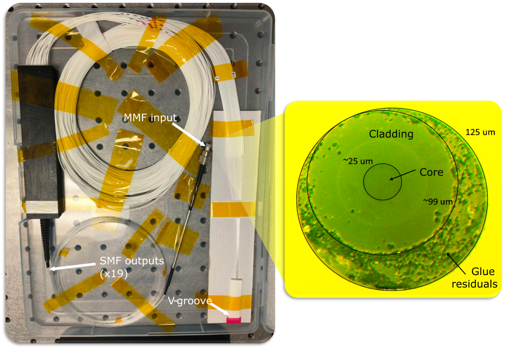
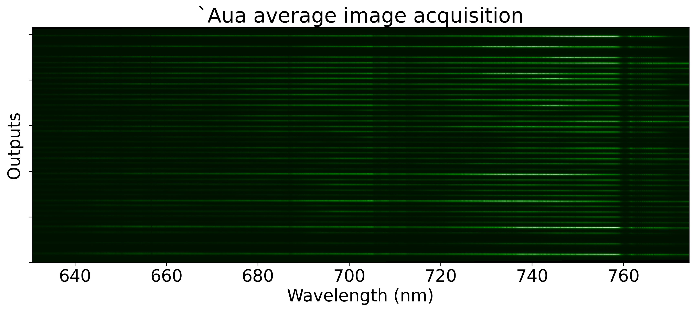

Instrument presentation
The Fibered Imager foR a Single Telescope (FIRST) is a spectro-interferometer operating in the visible wavelengths at a resolution of about 4,000. It is fed by the SCExAO system. FIRST was developed in collaboration with the Paris Observatory.
FIRST feeds a Photonic Lantern device from a focal plane. The Photonic Lantern consists of a multi-mode input slowly transitioning into 19 Single-mode fibers. The multi-mode input’s core has a diameter of 25 micrometers.
{kind=link}
Figure 1: Photonic Lantern hardware. The input is a multi-mode fiber, and the outputs are 19 single mode fibers spliced into a V-groove
The 19 outputs of the Photonic Lantern feed a mid resolution spectrograph (R~4,000), optimized for wavelengths ranging from 620 nm to 780 nm. The spectrograph is equipped with a wollaston, allowing to split the polarization for each output, providing a total of 38 spectra (see below). More information on the instrument and its integration on SCExAO are available here.
Figure 2: Example of imaging of `Aua (Betelgeuse) using the Photonic Lantern. This image is averaged from 200,000 frames, and displays 38 spectra, corresponding to the two polarizations from each of the 19 outputs of the Photonic Lantern.
General information
FIRST parameters |
||
|---|---|---|
Operating wavelength |
620 - 780 nm |
|
Spectral resolution |
R~4,000 |
|
Spatial resolution |
TBD |
|
Field of view |
80 mas @ f/8 |
Optimal injection efficiency is for a focal ratio of 8, providing a field of view of 80 mas.The field of view is defined as the area where the injection efficiency drops to 50% compared to the center of the field. |
Exposure times |
7.2us - 1800 s. |
Fast or Slow readout modes possible |